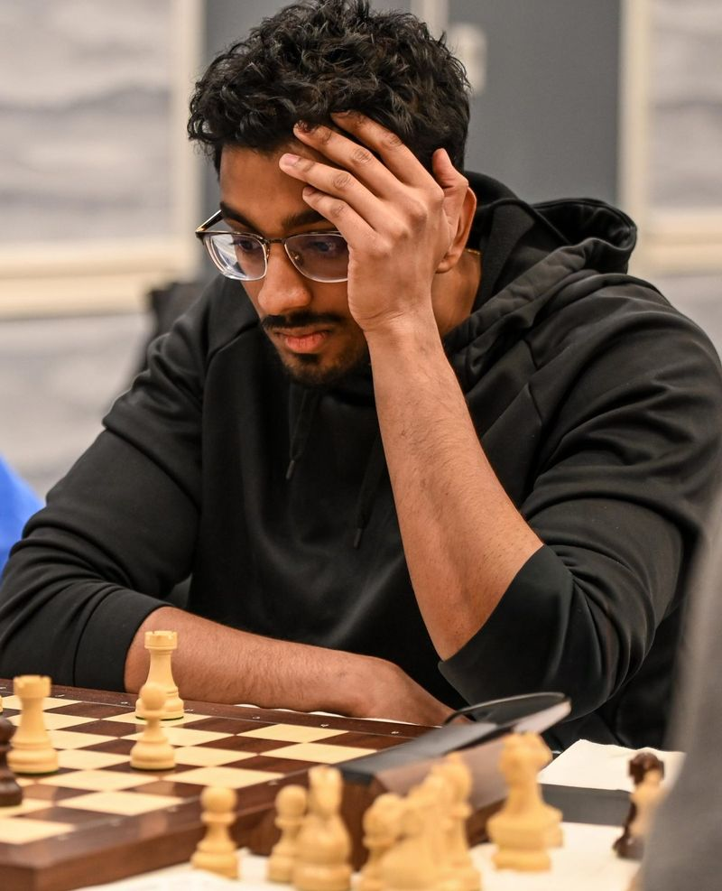
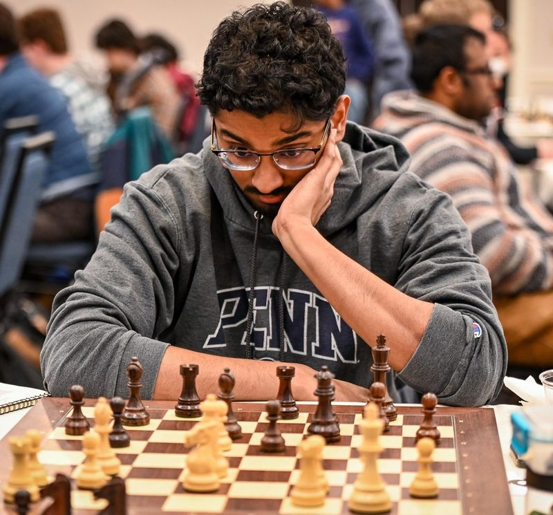
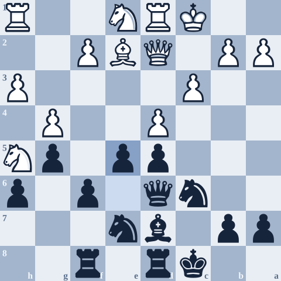
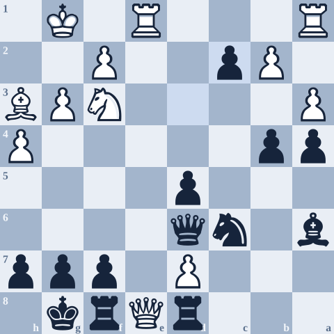

My US Chess Rating
Every rated tournament I've played since 2009, from the US Chess records. Hover over or tap the line to see each event. How I built this chart.
Key moments
See all 177 rated results
| Date | Event | State | Regular | Quick | Blitz |
|---|
Source: US Chess ratings, member 14290675. Includes results through May 9, 2026 and updates automatically.
Chess When I Was a Kid
I started playing chess when I was four when my dad introduced it to me. My parents initially introduced it to my sister, but I ended up going to a tournament and loving it. I played a lot with my dad and remember the day I could finally beat him.
For most of elementary school, I was one of the top-ranked players my age in the country. In third grade, I tied for 4th in the K-3 National Tournament.
That looks great on paper. But it was a lot of pressure from a young age, and I started to explore other interests. By middle school, I was burning out and dived deeper into those interests. I put that energy into STEM and quiz competitions instead: Science Bowl, Ocean Bowl, Science Olympiad, and research. By high school I had more or less retired from serious chess.
First Moves
My dad introduced me to chess, and it stuck.
Tied for 4th Nationally
Tied for 4th at the K-3 National Tournament. Lots of results, and lots of pressure.
Burnout
I stepped away from chess and found new competitions to love. Looking back, I appreciate the break to explore other facets of life.
The Comeback
I came back during COVID, after my senior year of high school. The Queen's Gambit and the streaming boom had everyone talking about chess, and friends started asking me to play. I started on Lichess, joined my college chess club, and during some time off after my sophomore year I rediscovered opening study through Hanging Pawns. My early repertoire was the Trompowsky, Exchange lines against d5 structures, the Tarrasch, and the Hyper-Accelerated Dragon.
The biggest factor in my comeback was my hometown chess community. My friends participated in and ran the Gryphon Games, a Saturday tournament every other week, and I played in them constantly. I won a lot of them, usually while playing down. That's also where my style settled into what it is today: calm and controlled. I'll admit I also picked up a serious Chessable course habit along the way.
Top of the State
I became one of the top players in my state, went on a roughly 37-game undefeated streak over the board, and trained online with other serious chess improvers. My rating peaked at 2146.
- Few strong events. My state didn't have as many strong or regular tournaments, and lacking K40 (a higher K-factor that lets young players' ratings rise and fall faster) hurt.
- Playing down. Winning against lower-rated players didn't gain a lot of points.
- Avoiding tactics. I dodged tactics training until the Woodpecker Method showed me it could be fun.
- Life. School and other priorities came first for me.
The Final Push to NM
Back at university, chess slid down my priority list. My decline started at the Penn Fall Swiss that October, and a rough winter break and a bad Liberty Bell Open dropped me below 2100, after I had peaked at 2146. That was my low point, and it forced me to rethink how I trained.
What I changed
- Finished the Woodpecker Method. Tactics finally stopped being something I avoided.
- Narrowed my repertoire. I dropped the Catalan for the Nimzo and the QGD Exchange, and moved to a simpler, system-based repertoire as Black.
- Focused on one or two things at a time instead of trying to fix everything at once.
- Worked through some of Perfect Your Chess and played training games with lots of review.
- Played for wins, not perfect games, and got serious about time management.


Shaking Off the Rust
A local summer tournament started rusty and finished with strong wins, taking me from 2084 back into the 2100s.
My Best Event
A draw, then three straight wins (two of them near-perfect games against 2000+ players), then a final-round draw with GM Maxim Dlugy as Black.

Invitational Wins
I beat a 2000-rated player and FM Gunnar Andersen, Colorado's current strongest player, at an invitational event.

National Master
I left for Penn at 2187 and played regular local quads. Funnily enough, I took an early draw as Black in a position that was -5 in my favor, and got stuck at 2199.29. Finally I won a first-round game against an 1890 at the Penn Fall Swiss, withdrew, and finished at 2203. In another twist of fate, the Penn Fall Swiss is where my rating decline had started. It all came full circle.
I'm grateful for every training partner, opponent, coach, and friend who made it worth it. NM really is the friends we made along the way.
Read the full story with the games: Three Games That Got Me to NM →
Tournament Highlights
- 2026 - Top 5 highest rated active player in Colorado
- 2026 Tribute to MLK - Tied for 1st
- 2025 Philly Open - Tied for 3rd
- 2024 & 2025 Denver Open - Tied for 2nd
- 2024 CO Closed Challenger - Winner
- 2015 Colorado Open - Tied for 2nd
- 2011 National K-12 Grade Championships, Grade 4 - Tied for 4th place
- 2011 National Elementary School Championship K-3 - Tied for 4th place
- CO Scholastic State Champion - 2010, 2011, 2014, 2015
What I'd Do Differently, Warts and All
This isn't a recommendation. For that, see the Improvement guide. This is an honest look at the path I actually took. My biggest regret is that I went too far in one direction, burned out, and then came up short in my weakest areas: endgames and tactics.
Openings
Too muchFun, but not always good ROI. I bought a lot of courses and switched lines often. Narrowing my repertoire did more for me than adding to it.
Tactics
AvoidedI dodged them for years. The Woodpecker Method changed that by showing me tactics training can actually be fun.
Endgames
NeglectedOne of my weaker areas, although I gained much more confidence once I trained them religiously.
Community
The real secretThe most important factor in my comeback. Find people to play, review, and talk chess with.
Training Games & Review
Helped mostThe thing that helped most in the final push. Play serious games and actually review them. Here's how I do it.
My 60 Favorite Games
Here are some of my favorite games from across this chess journey. Not quite 60 games yet though. Wins, losses, brilliancies, blunders - all of it shaped my game.
My most memorable game
My most memorable game was my draw at the 2025 Philly Open against GM Max Dlugy. This was the second time I was playing a grandmaster, the last time being 10 years ago where I got slowly crushed. I played a rarer line against his London, and got an opening advantage that I built into a solid middlegame advantage. He started to outplay me, but missed some very sharp winning blows in order to convert. I neutralized his advantage and held the draw to end up tying for 3rd despite a strong field of GMs and other titled players.
Read the full game, move by move: Drawing a GM →
♟ View My 60 Favorite Games on Lichess